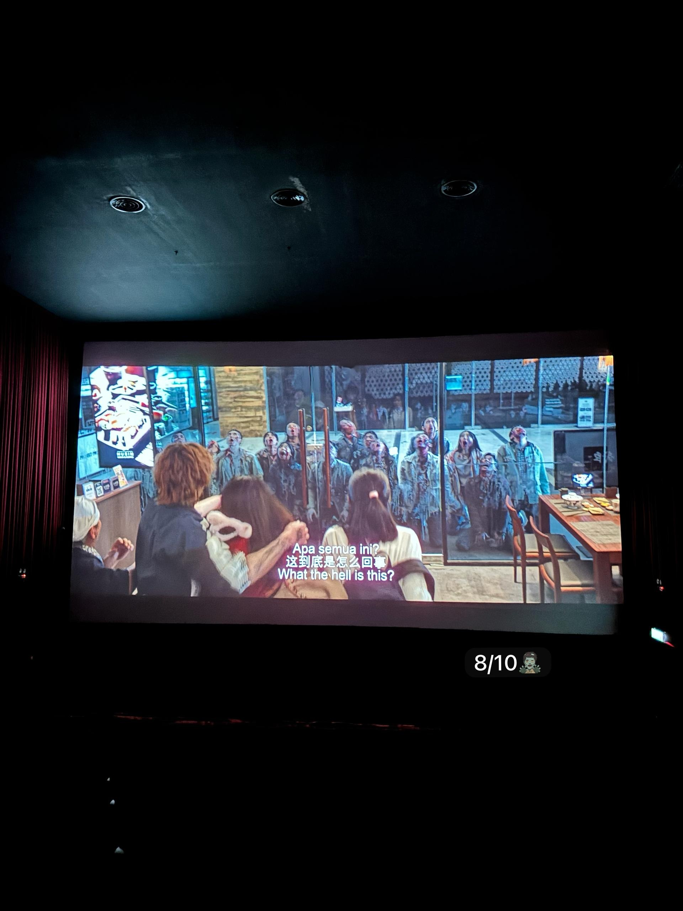
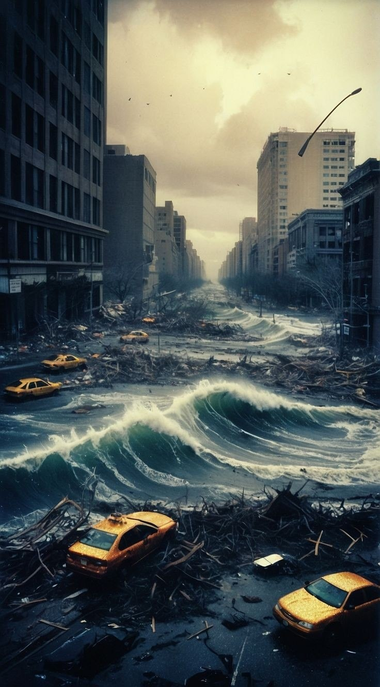
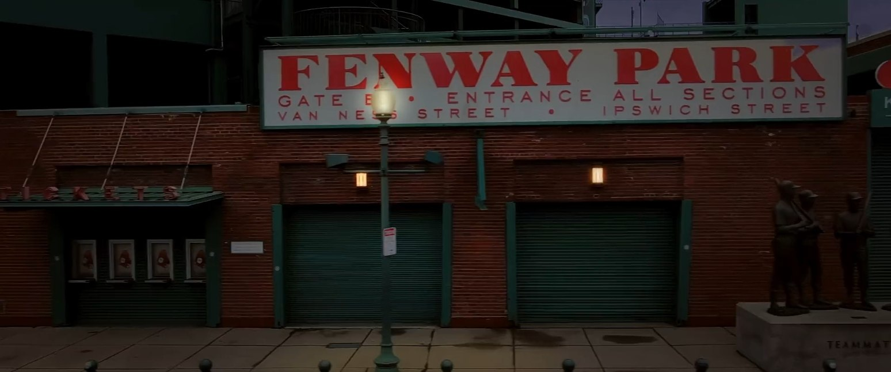
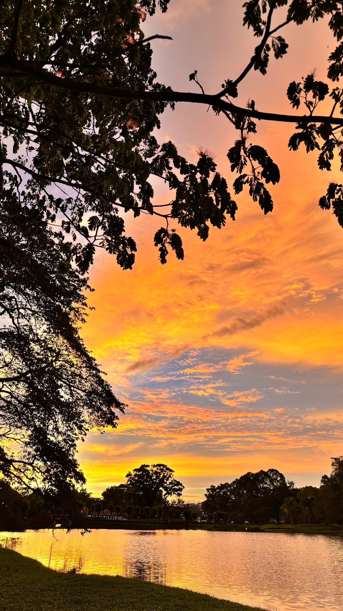
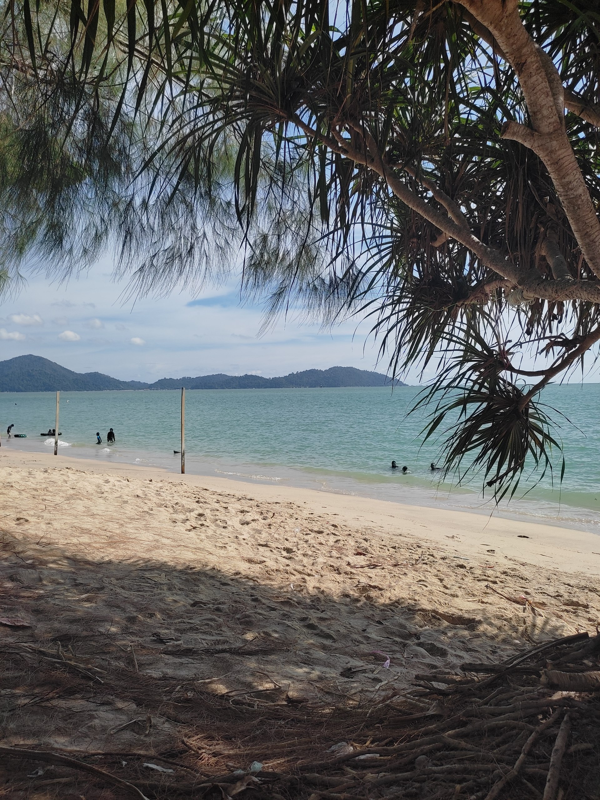
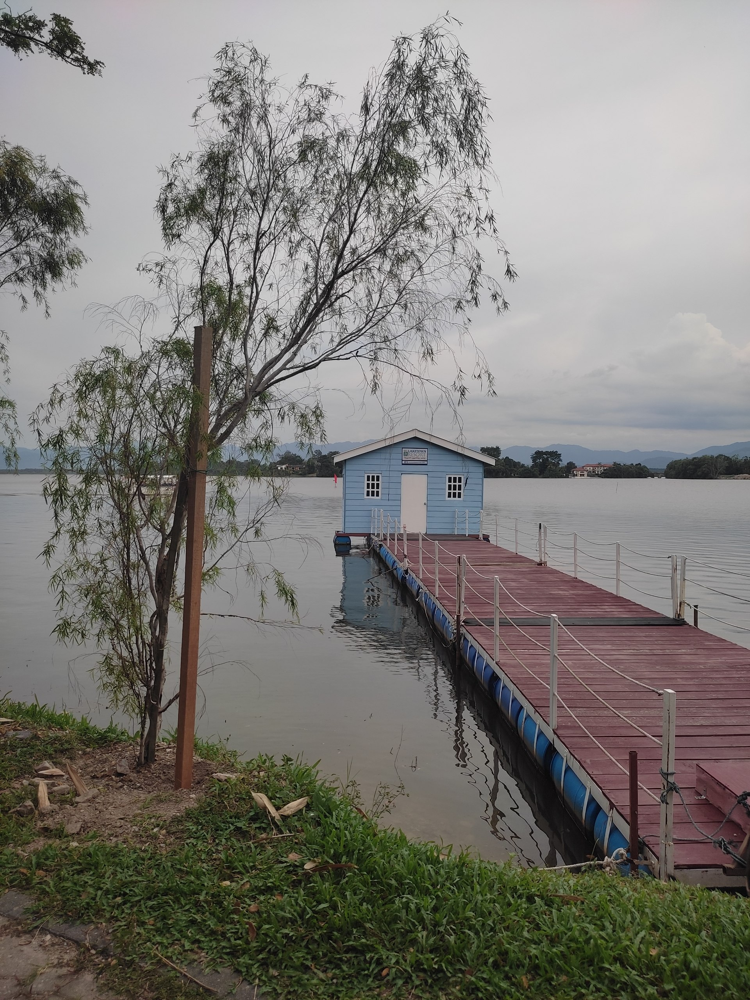
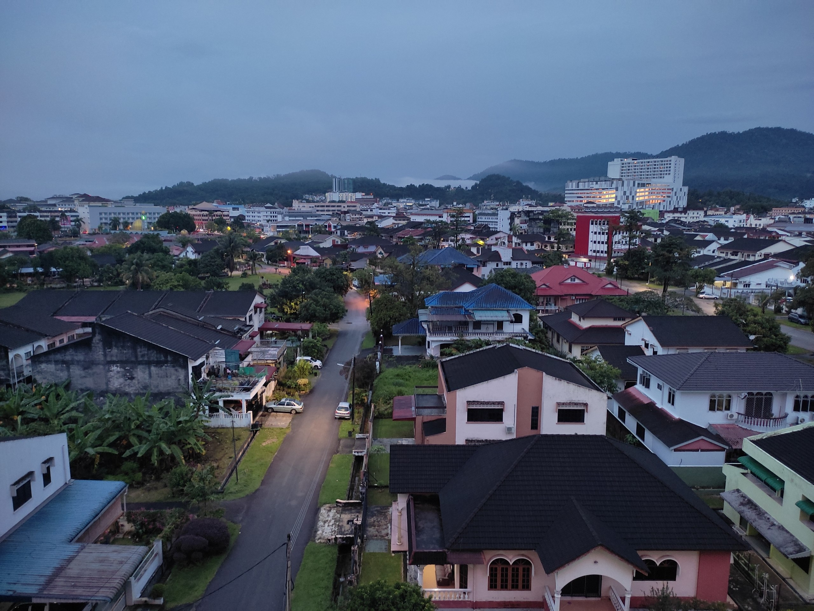
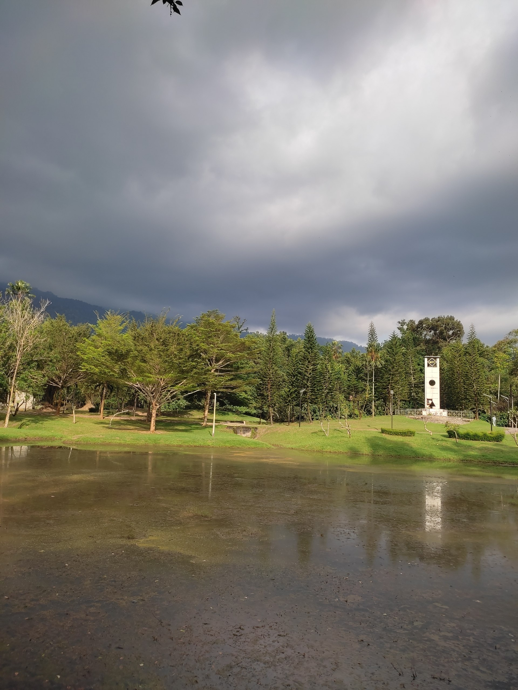

My Hobbies
Here are the activities that I enjoy doing during my free time:
1. Dining Out with Family and Friends
My first hobby is going out to eat together with my family and friends. Spending quality time while sharing delicious meals strengthens our bond and creates wonderful memories together. We love exploring trending eateries using platforms like Foodpanda.


2. Watching Movies and Dramas
My second hobby is watching movies or television dramas. It is one of my favorite ways to unwind and relax after a busy academic schedule, exploring various genres on Netflix and checking the latest cinema listings on GSC.



3. Exploring Lake Parks and Beaches
My third hobby is going out for leisure walks, specifically visiting serene lake parks or beautiful beaches. Being close to nature and enjoying the fresh scenery helps me clear my mind, and I often look for local travel recommendations on Tripadvisor to stay refreshed.




